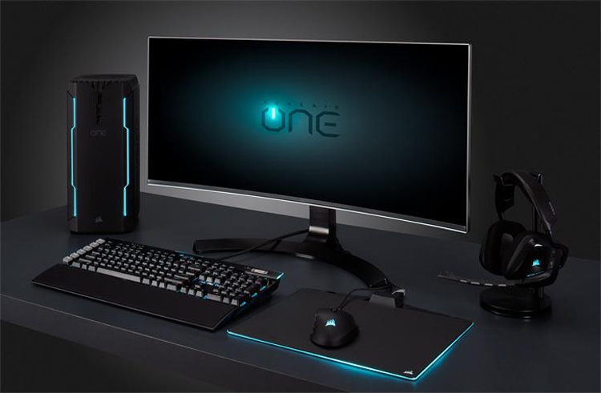
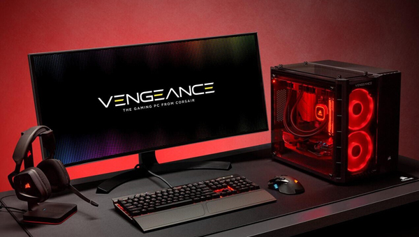
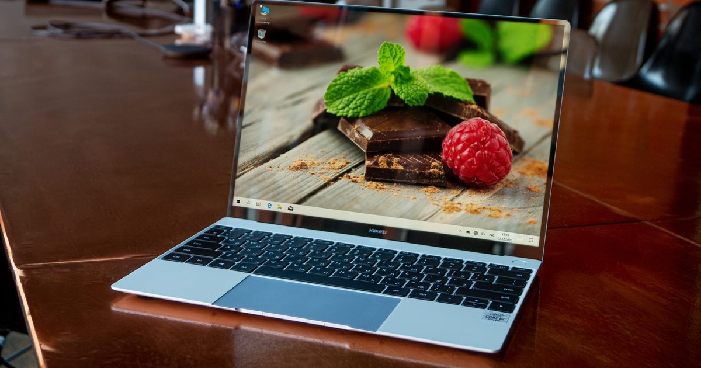
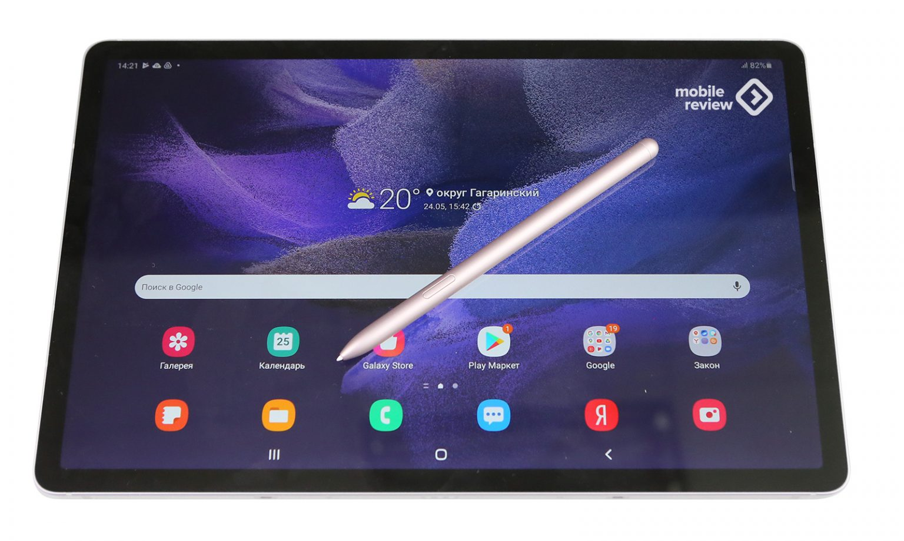
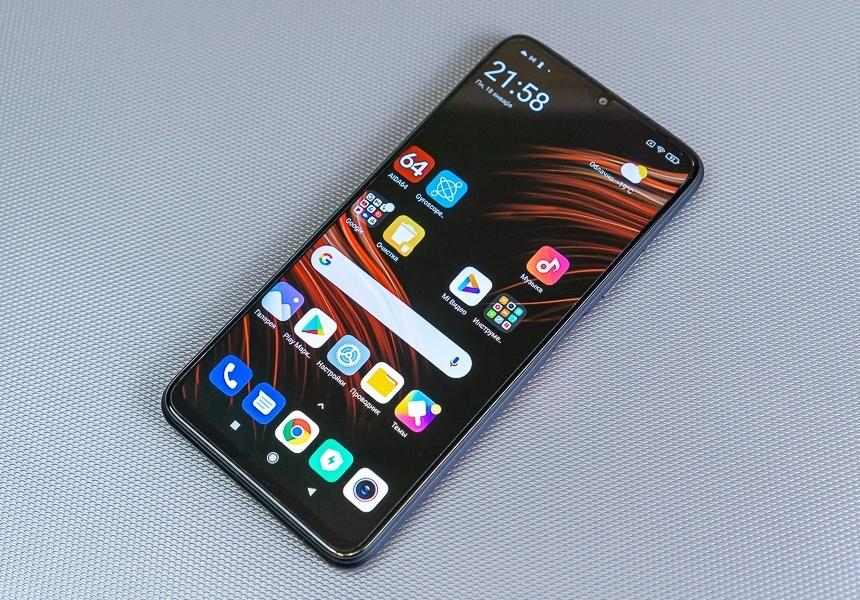
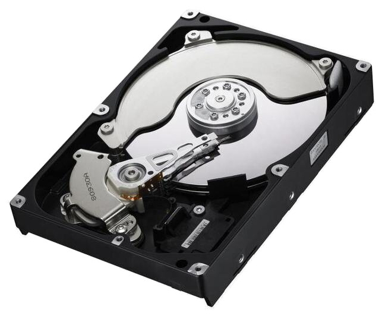
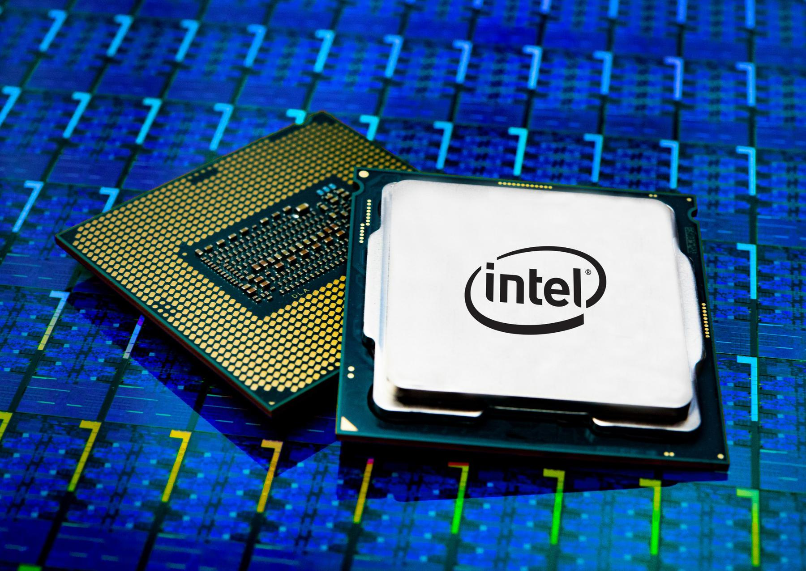
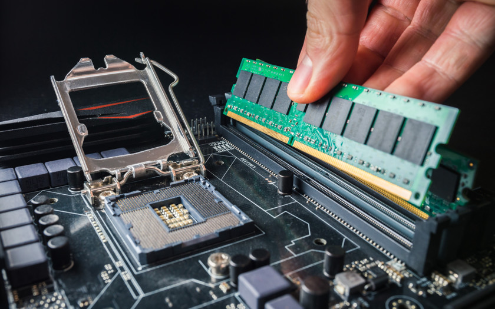

Компьютер— это устройство, предназначенное для обработки, хранения и передачи информации.
Cлово «Компьютер» произошло от английского «Computer», что в переводе означает «вычислитель». В русском языке изначально применяли аббревиатуру «ЭВМ» — электронная вычислительная машина.
На сегодняшний день «Компьютер» и «ЭВМ» можно считать синонимами.
Когда говорят о компьютере, часто подразумевают персональный компьютер:
ПК или персональный компьютер (PC, personal computer) — компьютер, предназначенный для индивидуальной работы
Понятие ПК в последние годы разрослось: всё время появляются новые устройства и разновидности старых,
которым дают похожие названия. Конечно же, если не следить постоянно за новостями, то всё это только
запутывает при выборе нового компьютерного устройства.
Наверняка Вы задавались вопросом «чем отличается нетбук от ноутбука?» или «смартфон и КПК – в чем разница?» еще и «ультрабуки» появились.
Сегодня мы разберем все подвиды персонального компьютера (ПК).

Настольный ПК (англ. Desktop computer) — стационарный компьютер, тот самый,
который стоит на столе (или под столом) к нему подключены монитор, клавиатура и мышь.
До недавнего времени именно настольные ПК были самыми распространенными и популярными.
В некоторых задачах им пока что нет замены (профессиональная работа с графикой, мощные трехмерные игры и многое другое).

Преимущества настольных ПК:
- Низкая стоимость (относительно конкурентов с такими же характеристиками)
- Широкий выбор возможных конфигураций (с учетом потребностей для разных задач)
- Возможность самостоятельно подобрать комплектующие
- Легкая замена комплектующих
- Минимум проблем при апгрейде (модернизации)
- Значительно более низкая стоимость ремонта
Недостатки настольных ПК:
- Большие размеры и вес, что приводит к сложностям при транспортировании
- Потребляют немало электроэнергии (особенно производительные системы)
Ноутбук (англ. Notebook — блокнот, второе название Laptop – «на коленях») — портативный переносной
компьютер, содержит в одном корпусе все необходимые компоненты. В последнее время успешно конкурирует с настольным ПК.

Преимущества ноутбуков:
- Небольшие размеры и вес (1,5 – 4 кг)
- Все устройства в одном корпусе (монитор, клавиатура, тач-пад, web-камера, сетевой адаптер, Wi-Fi, кардридер, динамики…)
- Низкое потребление электроэнергии
- Наличие аккумуляторной батареи, что позволяет использовать ноутбук вдали от розетки (от двух до шести часов)
Планшет (англ. Tablet computer — планшетный компьютер) – разновидность переносного компьютера с сенсорным экраном.
Используется без клавиатуры, но зачастую есть возможность её присоединить.
Особенность планшета в компактности при достаточно большом экране.

Планшеты получили популярность после выпуска фирмой Apple планшета iPad, затем многие другие производители начали разработку своих планшетов.
Если кратко описать особенности планшета, то можно уложиться в одно предложение: «очень удобно бродить по Интернету и делать различные заметки, но полностью заменить компьютер или ноутбук пока не может».
Тем не менее, как дополнительное устройство планшет может быть очень практичен.
Смартфон (англ. smartphone — умный телефон) – мобильный телефон с возможностями компьютера: имеет свою операционную систему,
можно устанавливать программы, переключаться между разными приложениями.

Большинство современных телефонов стоимостью от 40 у.е. являются смартфонами.
Практически на любом телефоне можно зайти в Интернет и проверить почту,
посмотреть прогноз погоды, или почитать новости.
Смартфоны позволяют слушать музыку, смотреть фильмы, устанавливать достаточно функциональные программы.
Разработано множество программ для смартфонов, которые приближают функционал телефона к компьютеру.
Главное ограничение при работе в таких программах – размер экрана и невысокое удобство управления.
Если размер экрана Вашего смартфона недостаточно большой, а вы планируете много читать и достаточно активно работать в дороге, то обратите внимание на планшеты.
Современные планшеты и смартфоны очень близки по функциональности, главное отличие — размер экрана.
Кроме того, не во всех планшетах можно использовать SIM-карту для звонков, даже если есть разъём для неё.
Компьютер хранит, передаёт и обрабатывает информацию в виде нолей «0» и единиц «1»,
то есть используется двоичный код и двоичная система счисления.
В виде нолей и единиц хранятся и все данные, которые необходимо обработать, и все программы, которые руководят процессом обработки.
Когда информация занесена в компьютер (записана), то она хранится на специальном устройстве – накопителе данных.
Обычно накопитель данных – это жесткий диск (винчестер).
Жестким диском это устройство называется из-за конструкции.
Внутри его корпуса находится один или несколько твердых блинов (металлических или стеклянных),
на которых и хранятся все данные (текстовые документы, фотографии, фильмы и т.д.)
и установленные программы (операционная система, прикладные программы, как Word, Excel, и др.).
Информация на жестком диске хранится и после выключения компьютера.

Основная задача компьютера – обрабатывать информацию, то есть выполнять вычисления.
Большую часть вычислений выполняет специальное устройство – процессор.
Это сложная микросхема, содержащая сотни миллионов элементов (транзисторов).

Что в данный момент времени делать процессору говорит программа,
она указывает, какие данные необходимо обработать и что с ними нужно сделать.
Программы и данные загружаются с накопителя (жесткого диска).
Но жесткий диск – относительно медленное устройство, и если бы процессор ждал,
пока будет считываться информация, а потом записываться после обработки обратно, то он бы долго оставался без дела.
Для этого между процессором и жестким диском установили более быстрое запоминающее устройство – оперативную память (оперативное запоминающее устройство, ОЗУ).
Это небольшая печатная плата, на которой находятся быстрые микросхемы памяти.

В оперативную память заранее считываются с жёсткого диска все необходимые программы и данные.
Во время работы процессор обращается к оперативной памяти,
считывает команды программы, которая говорит какие данные нужно взять и как именно их обработать.
При выключении компьютера содержимое оперативной памяти не сохраняется в ней (в отличие от жесткого диска).
Когда компьютер выключен, все программы и данные хранятся на жестком диске.
При включении компьютера и запуске программы, происходит следующее:
- Программа с жесткого диска заносится в оперативную память и сообщает процессору, какие загрузить данные в оперативную память
- Процессор поочередно выполняет команды программы, порциями обрабатывая данные, взяв их из оперативной памяти
- Когда данные обработаны, результат вычислений процессор возвращает в оперативную память и берет следующую порцию данных
- Результат работы программы возвращается на жесткий диск и сохраняется
Чтобы компьютер получил информацию для обработки, её нужно ввести. Для этого используются устройства ввода данных:
- Клавиатура
- Мышь
- Сканер
- Микрофон
Для вывода результата обработки информации используются устройства вывода данных:
- Монитор
- Принтер
- Акустические системы или «колонки»
Кроме того, мы можем вводить и выводить данные на другие устройства с помощью:
- Внешних накопителей(с них мы копируем уже имеющиеся данные в компьютер):
- Флешка
- Компакт-диск (CD или DVD)
- Переносной жесткий диск
- Дискета
- Компьютерной сети(получаем данные с других компьютеров через Интернет или городскую сеть)
Компьютер получает данные с устройств ввода (клавиатура, мышь и т.д.), заносит их на жесткий диск,
затем передает в оперативную память и обрабатывает с помощью процессора.
Результат обработки возвращается сначала в оперативную память,
затем либо на жесткий диск, либо сразу на устройства вывода (например, монитор).